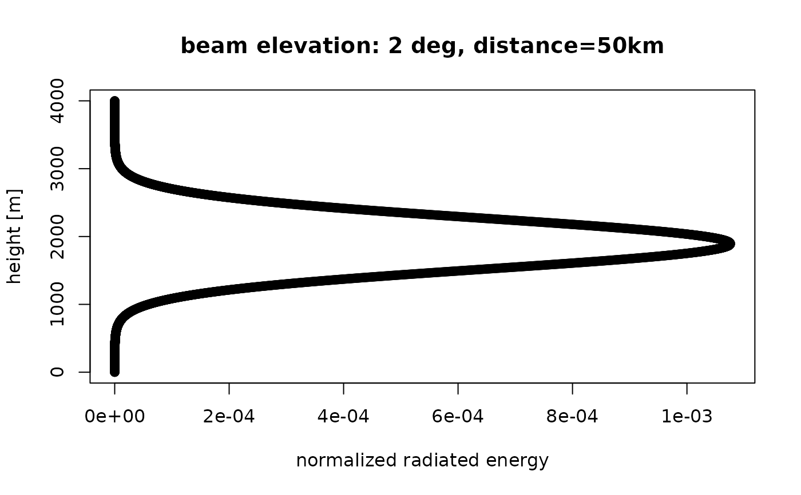

Calculate for a set of beam elevations elev the altitudinal normalized distribution of radiated energy by those beams.
beam_profile( height, distance, elev, antenna = 0, beam_angle = 1, k = 4/3, lat = 35, re = 6378, rp = 6357 )
| height | numeric. Height in meter. |
|---|---|
| distance | numeric. Distance from the radar as measured along sea level (down range) in m. |
| elev | numeric vector. Beam elevation(s) in degrees. |
| antenna | numeric. Height of the center of the radar antenna in meters |
| beam_angle | numeric. Beam opening angle in degrees, typically the angle between the half-power (-3 dB) points of the main lobe |
| k | Standard refraction coefficient. |
| lat | Geodetic latitude of the radar in degrees. |
| re | Earth equatorial radius in km. |
| rp | Earth polar radius in km. |
numeric vector. Normalized radiated energy at each of the specified heights.
Beam profile is calculated using beam_height and beam_width. Returns a beam profile as a function of height relative to ground level.
Returns the normalized altitudinal pattern of radiated energy as a function of altitude at a given distance from the radar, assuming the beams are emitted at antenna level.
# plot the beam profile, for a 0.5 degree elevation beam at 50 km distance from the radar: plot(beam_profile(height = 0:4000, 50000, 0.5), 0:4000, xlab = "normalized radiated energy", ylab = "height [m]", main = "beam elevation: 0.5 deg, distance=50km" )# plot the beam profile, for a 2 degree elevation beam at 50 km distance from the radar: plot(beam_profile(height = 0:4000, 50000, 2), 0:4000, xlab = "normalized radiated energy", ylab = "height [m]", main = "beam elevation: 2 deg, distance=50km" )